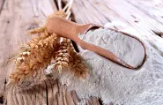
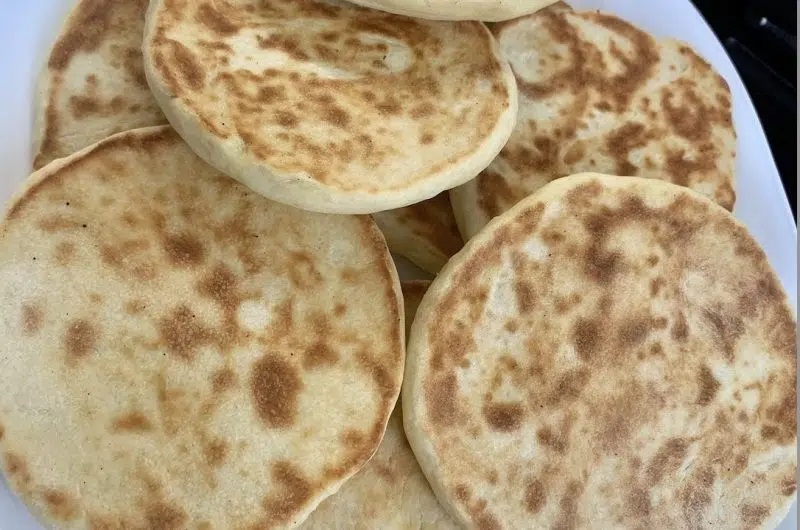
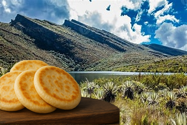
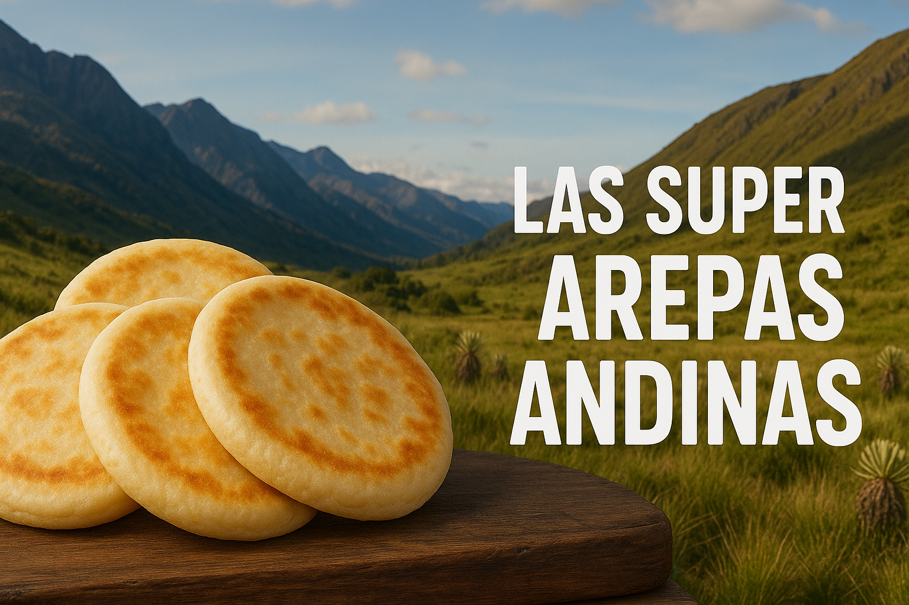

Descubre la esencia de nuestras arepas andinas

Un Viaje de Sabor.
Cada arepa que preparamos cuenta una historia. Desde la selección cuidadosa de la harina de trigo más

Nuestra Pasión por la Calidad.
La calidad es fundamental en Las super arepas andinas. Nos comprometemos a utilizar solo los más

El Origen de la Arepa Andina.
Las arepas andinas tienen raíces profundas en la cultura de los Andes. Se dice que su origen se más

Nuestra misión es ofrecer arepas de harina de trigo andinas que celebren la cultura y la tradición de nuestra tierra, brindando a nuestros clientes una experiencia auténtica y memorable. Creemos en la importancia de mantener vivas nuestras raíces a través de la gastronomía.
Descubre más